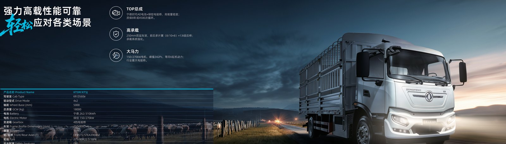

The EU carbon border regime changes how an electric truck exporter prepares a shipment, because CBAM now covers the embedded emissions of imported vehicles. A Dongfeng EV truck already beats diesel on tailpipe carbon, but to clear the border you must document the battery and steel carbon footprint with verified data. This guide walks exporters through the exact steps from factory to port.
The Carbon Border Adjustment Mechanism applies to goods with carbon-intensive production, and from 2026 importers must surrender CBAM certificates for the embedded emissions of covered products. For an electric truck, the relevant embedded carbon sits in the steel chassis, the aluminium components and the CATL LFP battery cells. Exporters who supply verified emission data let their EU buyers calculate certificate cost precisely instead of paying a conservative default that can inflate landed price by several percent.
CBAM does not tax the vehicle directly; it equalizes the carbon price paid by EU producers. Because a Dongfeng EV truck carries a clean LFP pack with a long 8-year or 4,500-cycle warranty, its embedded battery carbon is lower than older chemistries, and that advantage should be documented so the buyer captures the saving. Exporters should request the battery carbon intensity from the cell supplier and attach it to the commercial file.
Buyers need three data sets before the truck crosses the border: the chassis steel emission factor, the battery cell production carbon intensity, and the assembly plant energy mix. The table below lists the documents most EU importers request and the responsible party for each within the Dongfeng export chain.
| Document | Covers | Prepared by | Validity |
|---|---|---|---|
| Product carbon footprint (PCF) | Vehicle cradle-to-gate CO2e | OEM / exporter | 12 months |
| Battery cell carbon intensity | CATL LFP kWh CO2e | Cell supplier | Per batch |
| Steel mill emission factor | Chassis steel CO2e | Steel mill | Annual |
| Assembly energy declaration | Plant electricity mix | Assembly plant | Annual |
| Third-party verification | Independent audit | Accredited verifier | Per filing |
Preparing this packet early shortens the clearance window. The TZ8J electric mixer truck ships with a 350 to 422 kWh CATL LFP pack, and its battery carbon dossier is the item most often requested first by EU buyers who must report embedded emissions for the mixer body as well as the chassis.
Compliance is a documentation discipline more than an engineering change. The list below shows the sequence exporters follow so the shipment is never held at the border for missing carbon data.
Because the regulation updates annually, exporters should re-verify the carbon file at least once per year and whenever the pack size changes. A 422 kWh mixer and a 282 kWh cargo truck carry different battery carbon totals, so the data must track the specific electric truck on each bill of lading rather than a generic model average.
Several exporters use the Morocco electric truck market as a staging point because Morocco runs free-trade access to the EU and hosts growing EV assembly capacity. By completing final assembly or battery pack integration in Morocco, a Dongfeng EV truck can reduce the embedded carbon attributed to the longest shipping leg and simplify the CBAM certificate math for the EU buyer. This does not remove the need for verified data, but it can lower the default emission factor applied at entry.
Morocco also gives buyers in Europe a shorter, cleaner logistics lane. A TZ8J mixer bound for southern Europe can clear via a Moroccan free zone, where the carbon paperwork is checked once and the truck then moves under intra-trade rules. Fleets planning repeated electric truck deliveries should weigh this route against direct China-to-EU shipping when volume justifies a regional hub.
CBAM cost on a Dongfeng EV truck is modest compared with diesel alternatives because the vehicle's embedded carbon is low, but exporters should still present the number explicitly. A 350 kWh pack with verified LFP carbon intensity adds only a small certificate cost per unit, while the same tonnage of steel in a diesel chassis draws a larger default factor. Showing the verified file turns compliance from a hurdle into a sales advantage for the electric truck.
The export desk at Shaanxi Fenghan Trading prepares the carbon dossier alongside the quote, so overseas buyers receive a CBAM-ready electric truck rather than a bare vehicle. That single step removes the most common delay in EU-bound shipments and lets fleets schedule delivery against their own decarbonization targets instead of against border paperwork.
The clearest way to show CBAM savings is a side-by-side of a diesel chassis and a Dongfeng EV truck. The diesel unit carries engine, transmission and exhaust embedded carbon plus the fuel it will burn, while the electric truck shifts most of its footprint into the CATL LFP pack, which is lower per kWh than older cells. Because the TZ8J mixer uses a 350 to 422 kWh pack with verified LFP carbon intensity, the buyer can document a lower cradle-to-gate total and pay a smaller certificate cost than a comparable diesel mixer would trigger at the EU border.
Start the verification at quotation, not after the truck is built. Request the product carbon footprint from the Dongfeng export desk, obtain the CATL LFP battery carbon intensity for the exact pack size, and engage an accredited verifier before the proforma invoice is finalized. Keep the assembly plant energy declaration in the same folder so the EU importer receives one coherent packet. When the file is complete, hand it over with the commercial invoice so customs and the CBAM registry see consistent numbers, which prevents the default-factor penalty that hits incomplete submissions.
The most frequent error is treating the carbon file as a final-step formality, which delays clearance and erodes the EV price advantage. The second is mixing pack sizes in one declaration, because a 422 kWh mixer and a 282 kWh cargo truck carry different battery carbon totals and must be reported per unit. The third is skipping verification, which forces the buyer onto a conservative default. Exporters who prepare the verified TZ8J electric mixer truck dossier up front avoid all three and keep the shipment moving through the Morocco staging route or direct to the EU.
Start the carbon file at the quotation stage, not after production. Provide the EU importer the product carbon footprint, the CATL LFP battery carbon intensity and the verified assembly declaration together with the proforma invoice. With those three documents, a Dongfeng EV truck such as the TZ8J mixer clears the border quickly and the buyer reports accurate embedded emissions without paying default penalties. Contact the export desk to receive a CBAM-ready quote for your electric truck fleet.
Ready to electrify your fleet? Contact Shaanxi Fenghan Trading — authorized Dongfeng EV truck exporter. WhatsApp: +86 153 1943 1311 | Email: sales@fenghan-trade.com | dongfengevtrucks.com
🌐 Our Network: Fenghan Trade (SAGMOTO/SHACMAN Truck Export) · SAGMOTO heavy duty diesel trucks